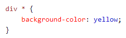
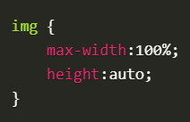
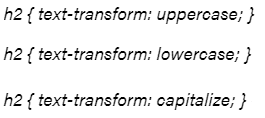

<div>
<div> tagu izmanto, lai definētu sadaļu no HTML dokumenta. To izmanto kā konteineru HTML elementiem, kuriem pēc tam piešķir stilu, izmantojot CSS vai JavaScript.
<div> tagu izmanto, lai definētu sadaļu no HTML dokumenta. To izmanto kā konteineru HTML elementiem, kuriem pēc tam piešķir stilu, izmantojot CSS vai JavaScript.
<span> tags ir līdzīgs <div> tagam - tas izveido konteineru HTML elementiem. Galvenā atšķirība ir tā, ka <span> definē konteineru rindā, bet <div> definē blokveida konteineru.
<style> izmanto, lai definētu stila informāciju (CSS) HTML dokumentā. Tajā definē to, kā lapai vajadzētu pārlūkprogrammā parādīties.
* + selektors
Pēc selektora izmantojot *, ir iespējams izvēlēties visus elementus HTML dokumentā ar doto tagu, un tad var ātri globāli mainīt, piemēram, teksta fontu visā lapā.
Attēlu izmēru maiņa
Ja ir vajadzīgs ātri mainīt attēla izmērus tā, lai tas ietilptu, piemēram, ekrānā vai konteinerā, atstājot attēla proporcijas nemainītas, tad vienam no attēla izmēriem nosaka max-[izmērs]:100%.
Lielo un mazo burtu lietojums
Lai ātri tekstu pārmainītu uz tikai lieliem vai maziem burtiem, izmanto text-transform atribūtu un attiecīgo formatējumu. Tas ir daudz ātrāk, nekā pārrakstīt visu tekstu.
